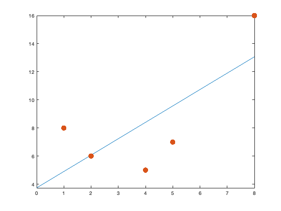
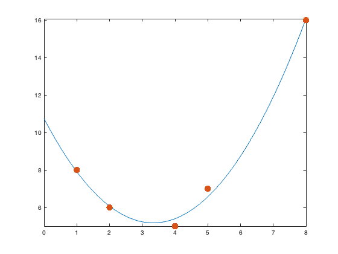
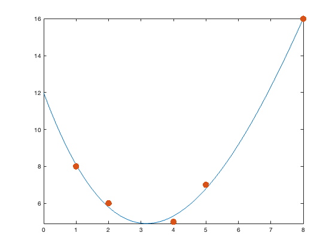
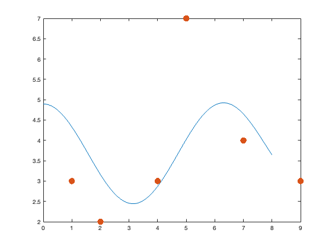

Contents
- Part 1: first data set
- first model: linear y=a0+a1*x
- second model: full quadratic y=a0+a1*x+a2*x^2
- third model: [STUDENT FILL IN:] cubic y=a0+a1*x+a2*x^2+a3*x^3
- answer questions: [STUDENT FILL IN:] answer questions as comments
- Part 2: student created data set must have at least 6 data points
- fourth model: [STUDENT FILL IN:] cosine + exponential y = a0+a1*cos(x)+a2*exp(x)
%%MATLAB EXPLORATION 12 %Rhea Jaxon
Part 1: first data set
data is given by an mx2 matrix with x-values in column 1 and y-values in column 2
data1=[ 1 8 ; 2 6 ; 4 5 ; 5 7 ; 8 16 ]; % extracts the x-values in column 1 x=data1(:,1); % extracts the y-values in column 2 y=data1(:,2);
first model: linear y=a0+a1*x
constructs the design matrix which is the coefficient matrix of the system Ax=b obtained from plugging in data points into the model
A=[1 x(1) ; 1 x(2) ; 1 x(3) ; 1 x(4) ; 1 x(5) ] % b vector is just the y-values b=y; % gets xhat least squares solution using fact that A has linearly % independent columns so A^T*A is invertible - note A' is MATLAB transpose xhat=inv(A'*A)*A'*b; % extracts alpha and beta values from the xhat vector a0=xhat(1); a1=xhat(2); % defines the function for plotting % WARNING: you must use .* for 'times' and .^ for 'exponent' or else % MATLAB will give an error code f1=@(x) a0+a1.*x; % compute the least squares error ||A*xhat-b|| errorLine=sqrt((A*xhat-b)'*(A*xhat-b)) % draws figure figure(1) fplot(f1,[0 8]) hold on plot(x,y,'.','markersize',28) hold off
A =
1 1
1 2
1 4
1 5
1 8
errorLine =
6.0305
 second model: full quadratic y=a0+a1*x+a2*x^2
[STUDENT FILL IN:] student should construct the design matrix which is the coefficient matrix of the system Ax=b obtained from plugging in data points into the model y=a0+a1*x+a2*x^2
A=[ 1 x(1) x(1)^2;
1 x(2) x(2)^2;
1 x(3) x(3)^2;
1 x(4) x(4)^2;
1 x(5) x(5)^2]
% copy-pasted/modified code from part 1
b=y;
xhat=inv(A'*A)*A'*b;
a0=xhat(1);
a1=xhat(2);
a2=xhat(3);
% defines the function for plotting
% WARNING: you must use .* for 'times' and .^ for 'exponent' or else
% MATLAB will give an error code
f2=@(x) a0+a1.*x+a2.*x.^2;
% least squares error ||A*xhat-b||
errorQuad=sqrt((A*xhat-b)'*(A*xhat-b))
% draws figure
figure(2)
fplot(f2,[0 8])
hold on
plot(x,y,'.','markersize',28)
hold off
A =
1 1 1
1 2 4
1 4 16
1 5 25
1 8 64
errorQuad =
0.6055
 third model: [STUDENT FILL IN:] cubic y=a0+a1*x+a2*x^2+a3*x^3
[STUDENT FILL IN:] student shout construct the design matrix which is the coefficient matrix of the system Ax=b obtained from plugging in data points into the model
A=[1 x(1) x(1)^2 x(1)^3; 1 x(2) x(2)^2 x(2)^3; 1 x(3) x(3)^2 x(3)^3; 1 x(4) x(4)^2 x(4)^3; 1 x(5) x(5)^2 x(5)^3] b=y; xhat=inv(A'*A)*A'*b; % [STUDENT FILL IN:] you may need to add/delete variables depending on how % many terms your model has, e.g. three terms needs up to a2=xhat(3) a0=xhat(1); a1=xhat(2); a2=xhat(3); a3=xhat(4); % [STUDENT FILL IN:] define the function for plotting % WARNING: you must use .* for 'times' and .^ for 'exponent' or else % MATLAB will give an error code f3=@(x) a0+a1.*x+a2.*x.^2+a3.*x.^3; % least squares error is ||A*xhat-b|| errorStudentModelforData1=sqrt((A*xhat-b)'*(A*xhat-b)) % draws figure figure(3) fplot(f3,[0 8]) hold on plot(x,y,'.','markersize',28) hold off
A =
1 1 1 1
1 2 4 8
1 4 16 64
1 5 25 125
1 8 64 512
errorStudentModelforData1 =
0.4407
 answer questions: [STUDENT FILL IN:] answer questions as comments
Q1: which model has the best error (smallest error value)? Ans1: Quadratic Q2: what does the value of the error |A*hat-b| represent geometrically? Ans2: The standard deviation from the actual data points on the graph.
Part 2: student created data set must have at least 6 data points
[STUDENT FILL IN:] create a data2 matrix where the data is given by an mx2 matrix with m>5 (at least 6 data points) with x-values in column 1 and y-values in column 2
data2=[2 2; 5 7; 4 3; 1 3; 7 4; 9 3]; % extracts the x-values in column 1 x=data2(:,1); % extracts the y-values in column 2 y=data2(:,2);
fourth model: [STUDENT FILL IN:] cosine + exponential y = a0+a1*cos(x)+a2*exp(x)
[STUDENT FILL IN:] student should construct the design matrix which is the coefficient matrix of the system Ax=b obtained from plugging in data points into the model
A=[1 cos(x(1)) exp(x(1)); 1 cos(x(2)) exp(x(2)); 1 cos(x(3)) exp(x(3)); 1 cos(x(4)) exp(x(4)); 1 cos(x(5)) exp(x(5)); 1 cos(x(6)) exp(x(6))] b=y; xhat=inv(A'*A)*A'*b; % [STUDENT FILL IN:] you may need to add/delete variables depending on how % many terms your model has a0=xhat(1); a1=xhat(2); a2=xhat(3); % [STUDENT FILL IN:] define the function for plotting % WARNING: you must use .* for 'times' and .^ for 'exponent' or else % MATLAB will give an error code f4=@(x) a0+a1.*cos(x)+a2.*exp(x); % least squares error is ||A*xhat-b|| errorStudentModelforData2=sqrt((A*xhat-b)'*(A*xhat-b)) % draws figure % [STUDENT FILL IN:] You may need to modify the range of the fplot second % argument [0 8] if your x-values go outside the range 0 <= x <= 8 figure(4) fplot(f4,[0 8]) hold on plot(x,y,'.','markersize',28) hold off
A =
1.0e+03 *
0.0010 -0.0004 0.0074
0.0010 0.0003 0.1484
0.0010 -0.0007 0.0546
0.0010 0.0005 0.0027
0.0010 0.0008 1.0966
0.0010 -0.0009 8.1031
errorStudentModelforData2 =
3.5229
